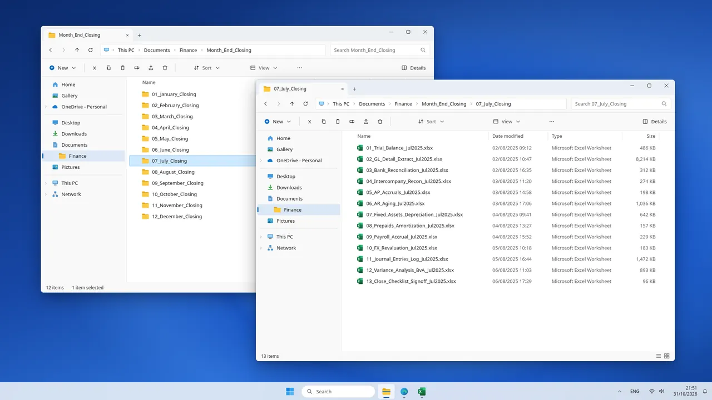
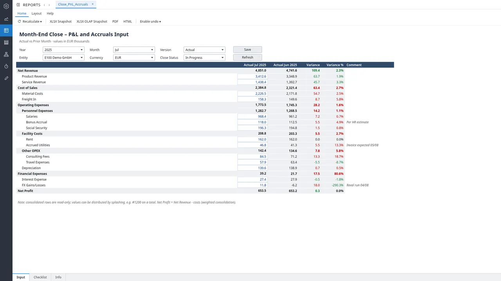
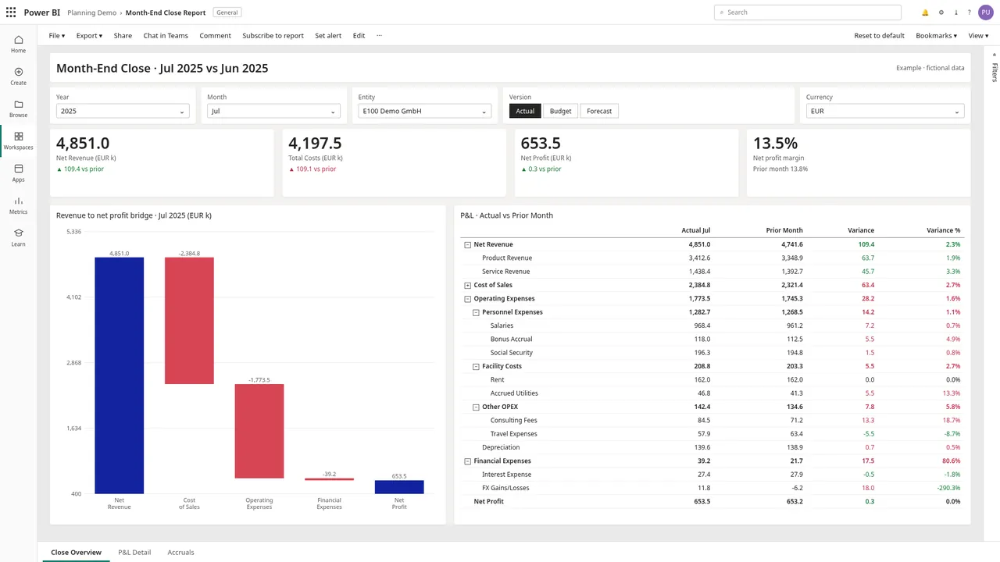
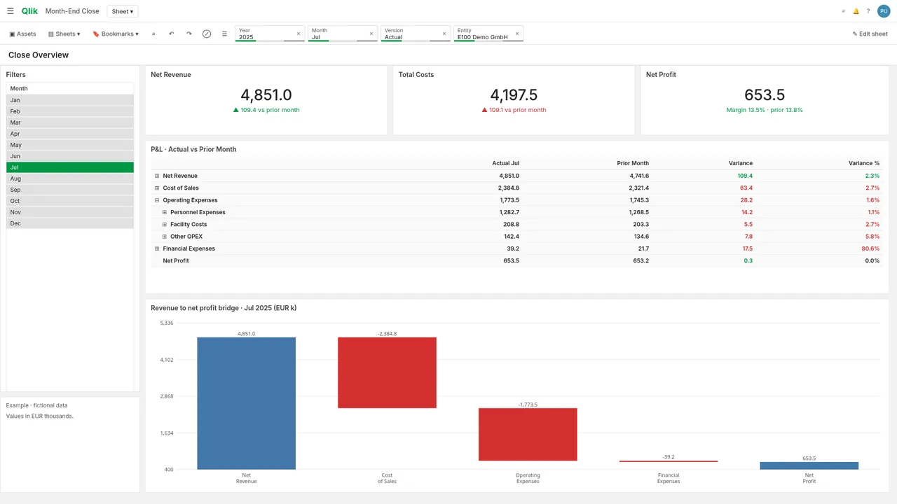

Typical scenario
Month-end close
Aim: close in 4 days instead of 8 Estimated impact
A typical month-end close at a mid-size consumer goods manufacturer: about EUR 400m revenue, 6 legal entities.
- Jedox
- Snowflake
- Power BI
- Qlik Sense
- Excel VBA
Before and after Estimated impact
BeforeAfter
Illustrates a typical goal, not a promised result.
Challenge
- Close run on ERP extracts and 13 Excel workbooks per month.
- Figures re-keyed between files; one late change rippled through several.
- Accruals and comments scattered, so review had no single view.
Impact
- Goal: controllers review numbers instead of copying them.
- Goal: one governed source for actuals across all entities.
Solution
- JedoxClose input form in user mode: P&L and accruals against prior month, with comments and close status.
- SnowflakeDaily load of trial balance and GL detail as the single source for actuals.
- Power BIRevenue-to-profit bridge and P&L matrix with favorable and unfavorable variances.
- Qlik SenseSame P&L as a pivot table with month filtering for Qlik users.
- Excel VBAExport of the sign-off checklist to the audit file.
Screenshots
Mockups with exemplary data.







